В 2025 году дистанционные программы профессиональной переподготовки и повышения квалификации по клинической психологии становятся всё более популярными. Они позволяют получить квалификацию клинического психолога без отрыва от работы и вне зависимости от места проживания. Например, программы профессиональной переподготовки предлагают обучение за 15,5 месяцев на базе высшего образования по любому профилю, что позволяет получить новую профессию. Для тех, кто уже имеет психологическое образование, доступны курсы длительностью 8 месяцев, направленные на получение новой специализации с квалификацией. Мы составили рейтинг ТОП-11 лучших дистанционных программ обучения по клинической психологии на 2025 год, чтобы помочь вам выбрать наиболее подходящий курс для профессионального роста.
Топ онлайн-курсов дистанционной переподготовки и повышения квалификации по клинической психологии
- Клиническая психология — МИП (по промокоду onlinekursy скидка 🎁 10%)
- Клиническая психология — Психодемия (по промокоду OnlineKursy действует скидка 🎁 5000 руб)
- Клиническая психология — НАДПО
- Клинический психолог – Институт Smart
- Клиническая психология – МИПО (по промокоду onlinekursy действует скидка 🎁 10%)
- Клинический психолог — MITM
- Клиническая психология – МШПП
- Клиническая психология с основами психотерапии – НИИДПО
- Клиническая психология – ИПО
- Клиническая психология с нуля — ИППСС
- Клиническая психология – ЦАППКК
Рассмотрим курсы профессиональной переподготовки и повышения квалификации на клинического психолога подробнее.
1. Клиническая психология – Московский институт психологии
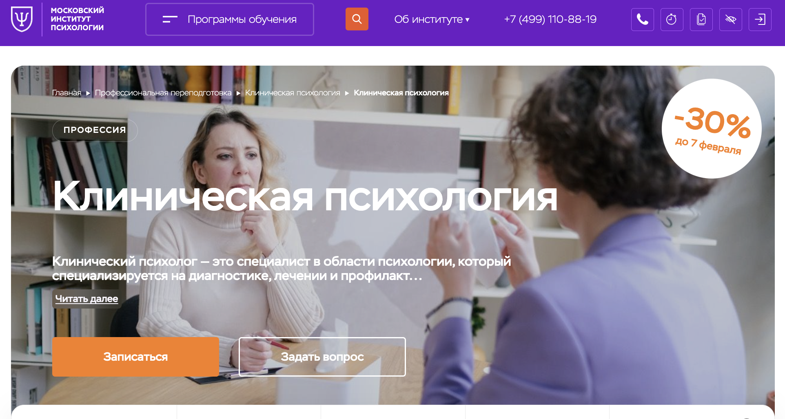- ✅ Официальный сайт: mip.institute
- 💸 Цена: 159 489 ₽ (со скидкой 30%)
- 💳 Рассрочка: возможна на 12 месяцев.
- 📚 Формат: дистанционный формат обучения с видеоуроками, домашними заданиями и тестами.
- ⏳ Продолжительность: 1 год 6 месяцев.
- 📜 Документ: диплом о профессиональной переподготовке.
- 📝 Трудоустройство: подготовка к частной практике в сфере клинической психологии.
- 🔷 Для кого подходит курс: новичкам в психологии, людям, желающим повысить квалификацию, и тем, кто хочет работать в этой области официально.
Особенности курса:
Курс предоставляет основу для работы в сфере клинической психологии. Студенты изучают методы психологической диагностики и лечения, а также методы психотерапии и клинического консультирования. Обучение проводится в удобном дистанционном формате с участием опытных преподавателей. Программа включает практические занятия и взаимодействие с коллегами, что создает уникальную возможность для обмена опытом. Завершения обучения сопровождается получением диплома государственного образца, признанного в России и за границей.
Кратко о программе:
- Клиническая психология
- Нейропсихология
- Методы психотерапии
- Психология здоровья
- Социальная психология
- Патопсихология
- Методы психологического консультирования
- Специфика работы с психическими расстройствами и зависимостями
Чему учатся студенты:
- Диагностировать и проводить диагностику психического состояния клиентов.
- Применять методы психотерапии и клинического консультирования.
- Разрабатывать программы психологической коррекции.
- Использовать современные методы психологической диагностики.
Преимущества:
- Высокая востребованность специалистов с высшим психологическим образованием на рынке труда.
- Дистанционный формат обучения, позволяющий учиться и работать из любого удобного места.
- Перспектива высокой зарплаты после окончания обучения.
- Доступ к актуальным учебным программам, материалам и поддержка преподавателей кафедры.
Отзывы учеников:
Студенты, прошедшие обучение, отмечают высокий уровень преподавания и профессиональную переподготовку. Многие выпускники получили дипломы о профессиональной переподготовке и смогли освоить профессию клинического психолога дистанционно. Отмечается доступный и удобный формат обучения, обилие практических навыков, а также профессиональная поддержка преподавателей.
2. Клиническая психология — Психодемия
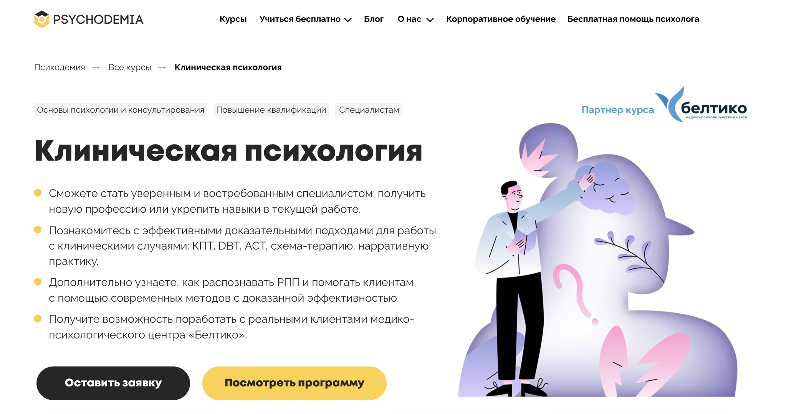- ✅ Официальный сайт: psychodemia.ru
- 💸 Цена обучения: от 367 974 ₽.
- 💳 Рассрочка: от 15 332 ₽/мес на 24 месяца.
- 📚 Формат: дистанционное обучение, включающее видеоуроки, групповые задания, вебинары и тесты.
- ⏳ Продолжительность: 2 года, 1053 академических часа.
- 📜 Документ: диплом о профессиональной переподготовке в области клинической психологии.
- 📝 Трудоустройство: поддержка в трудоустройстве через практику в центрах психологической помощи.
- 🔷 Для кого подходит курс: психологи, психотерапевты, специалисты смежных профессий и новички в сфере клинической психологии.
Особенности курса:
Программа обучения направлена на развитие профессиональных навыков в сфере клинической психологии, с акцентом на доказательные методы психотерапии. Учебный процесс включает изучение различных направлений психотерапии, таких как когнитивно-поведенческая терапия, нарративная и схема-терапия. Студенты изучают методы диагностики психических расстройств и проходят обучение с возможностью практики. Программа включает в себя консультации с преподавателями кафедры клинической психологии, что позволяет освоить профессию психолога дистанционно.
Кратко о программе:
- Биологические основы поведения.
- Диагностику психического состояния и клиническое интервьюирование.
- Клинические интервенции и профилактику психических нарушений.
- Этические вопросы в профессиональной подготовке.
- Работу с обсессивно-компульсивным расстройством.
- Тревожные расстройства и их диагностику.
- Психотерапию при психотических расстройствах.
- Методы диагностики и коррекции психических нарушений.
Чему учатся студенты:
- Выявлять и проводить диагностику психических расстройств.
- Разрабатывать стратегию лечения и выбирать эффективные методы психотерапии.
- Применять немедикаментозные методы психологической коррекции.
- Оценивать эффективность психотерапевтических вмешательств.
Преимущества:
- Интенсивное практическое обучение с реальными кейсами.
- Гибкие форматы обучения, доступные в любое время.
- Поддержка преподавателей кафедры клинической психологии.
- Доступ к дистанционным программам и образовательным материалам.
Отзывы учеников:
Студенты отмечают практическую направленность курса, актуальность учебных программ и профессиональный подход преподавателей. Многие выпускники получили дипломы о профессиональной переподготовке и успешно работают в центрах психологической помощи. Отмечается возможность дистанционного обучения с гибким графиком, что позволяет совмещать учебу с работой.
3. Клиническая психология — НАДПО
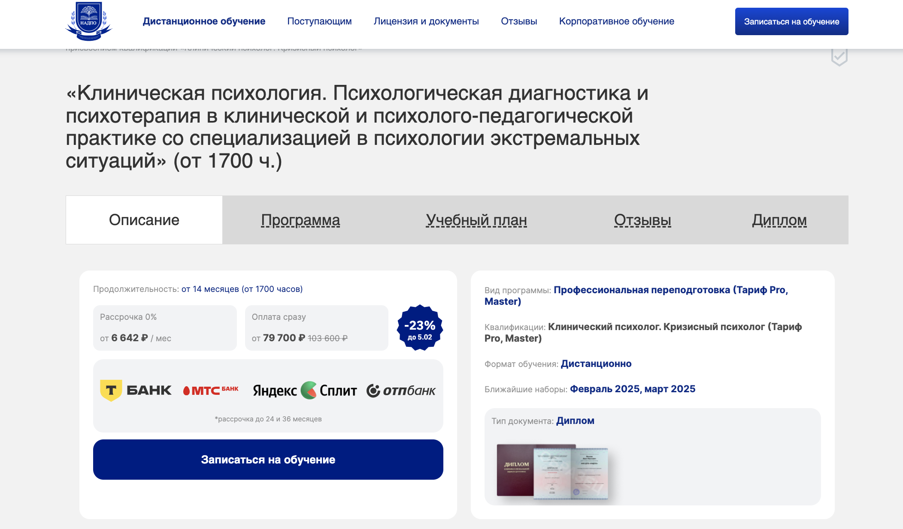- ✅ Официальный сайт: nadpo.ru
- 💸 Цена обучения: от 79 700 ₽ со скидками.
- 💳 Рассрочка: от 6 642 ₽ / мес до 36 месяцев.
- 📚 Формат: дистанционное обучение, включающее видеопроекции, домашние задания и тесты.
- ⏳ Продолжительность: от 14 месяцев (1700 часов).
- 📜 Документ: диплом государственного образца.
- 📝 Трудоустройство: консультации по трудоустройству и помощь в прохождении профессиональной практики.
- 🔷 Для кого подходит курс: начинающие и практикующие психологи, желающие углубить знания в области клинической психологии.
Особенности курса:
Курс предлагает студентам углубленное изучение клинической психологии, с акцентом на методы диагностики психического состояния. Обучение проходит в дистанционном формате, позволяя изучать теоретические знания и осваивать практические навыки. Программа включает профессиональную переподготовку с получением диплома государственного образца. В процессе обучения студенты изучают методы психотерапии, диагностические инструменты и методы психологической коррекции. Практическая деятельность включает клинические случаи и консультации преподавателей кафедры.
Чему учатся студенты:
- Методам диагностики кризисных состояний.
- Применять методы психологической диагностики и коррекции.
- Проводить консультации и психологическую реабилитацию.
- Разрабатывать индивидуальные программы психологической коррекции.
Преимущества:
- Гибкий формат обучения, доступный 24/7.
- Бессрочный доступ к учебным материалам после завершения обучения.
- Поддержка преподавателей с профессиональным образованием.
- Практическая направленность курса с диагностикой психического состояния.
Отзывы учеников:
Студенты отмечают удобство дистанционного обучения, гибкий формат и практическую направленность курса. Многие выпускники успешно применяют методы психотерапии в работе с клиентами, а также отмечают помощь преподавателей кафедры. Доступ к дистанционным программам и курсам повышения квалификации делает обучение особенно ценным.
4. Клинический психолог – Институт Smart
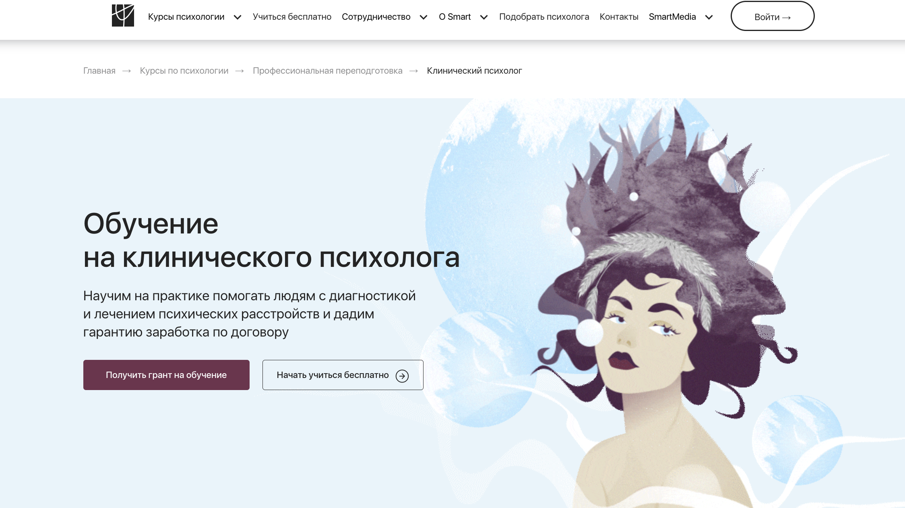- ✅ Официальный сайт: smart-inc.ru
- 💸 Цена: от 214 900₽ (Цена с учетом гранта).
- 💳 Рассрочка: возможна на срок до 12 месяцев с фиксированными платежами от 8 954 ₽/месяц.
- 📚 Формат: дистанционное обучение с видеолекциями, заданиями и супервизиями.
- ⏳ Продолжительность: 13 месяцев, 650 часов обучения.
- 📜 Документ: диплом о профессиональной переподготовке и диплом MBA.
- 📝 Трудоустройство: помощь в наработке клиентов во время обучения и партнерство с центрами психологической помощи.
- 🔷 Для кого подходит курс: для людей с высшим психологическим или медицинским образованием, желающих специализироваться в сфере клинической психологии.
Особенности курса:
Программа обучения направлена на глубокое изучение клинической психологии, методов психотерапии и диагностики психических расстройств. Курс включает профессиональную подготовку с практическими занятиями и супервизиями. Студенты изучают методы психологической диагностики, психосоматику и основы нейропсихологии. Обучение проводится дистанционно, что позволяет пройти профессиональную переподготовку без отрыва от работы.
Кратко о программе:
- Основы клинической психологии.
- Методы психодиагностики.
- Психотерапия и методы коррекции.
- Психосоматика и психология здоровья.
- Патопсихология.
- Нейропсихология.
- Работа с психическими расстройствами.
Чему учатся студенты:
- Проводить диагностику психического состояния пациентов.
- Применять методы психотерапии и консультирования.
- Разрабатывать психологическую коррекцию.
- Использовать профессиональные методы диагностики в клинической практике.
Преимущества:
- Практически ориентированное обучение с акцентом на клинические запросы.
- Гибкий формат обучения, позволяющий совмещать учебу с работой.
- Поддержка преподавателей и супервизоров на протяжении всего курса.
- Диплом о профессиональной переподготовке с возможностью международного признания.
Отзывы учеников:
Студенты положительно оценивают насыщенность программы, профессионализм преподавателей кафедры и возможность применять методы психотерапии на практике. Многие выпускники получили дипломы о профессиональной переподготовке и успешно работают клиническими психологами дистанционно.
5. Клиническая психология – МИПО
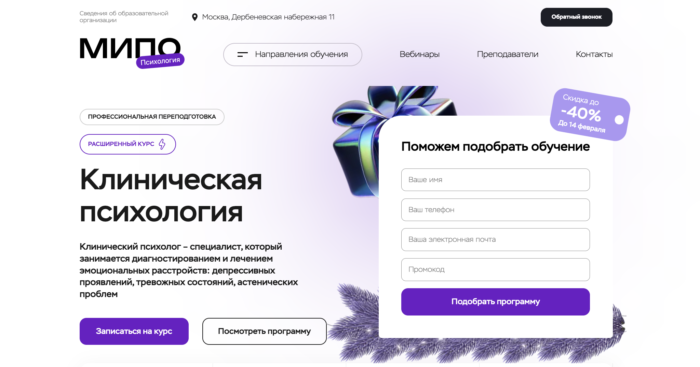- ✅ Официальный сайт: mipo.msk.ru
- 💸 Цена: различные тарифы от 72 065 ₽.
- 💳 Рассрочка: Доступна рассрочка на 24 месяца 8 580 ₽/месяц.
- 📚 Формат: дистанционное обучение, включающее онлайн-вебинары, видеоматериалы и тестирование.
- ⏳ Продолжительность: 10 месяцев (854 часа обучения).
- 📜 Документ: диплом о профессиональной переподготовке с регистрацией в ФРДО.
- 📝 Трудоустройство: Поддержка карьерного роста и помощь в трудоустройстве.
- 🔷 Для кого подходит курс: Для новичков, практикующих психологов и специалистов, желающих освоить профессию дистанционно.
Особенности курса:
Программа включает изучение клинической психологии с углубленной подготовкой по диагностике психических расстройств. Дистанционный формат позволяет студентам совмещать обучение с работой. Особое внимание уделяется методам психологической диагностики и психотерапии. Студенты получают диплом государственного образца, что подтверждает квалификацию в области клинической психологии.
Кратко о программе:
- Методы психологической диагностики.
- Психосоматика и психология телесности.
- Нейропсихология и патопсихология.
- Психологическое консультирование.
- Работа с эмоциональными расстройствами.
Чему учатся студенты:
- Диагностировать психические расстройства и проводить коррекцию.
- Использовать методы психотерапии в индивидуальном консультировании.
- Проводить диагностику психического состояния.
- Применять современные методы психологической коррекции.
Преимущества:
- Гибкий формат обучения, удобный для работающих специалистов.
- Доступ к профессиональным учебным материалам и вебинарам.
- Поддержка менторов и кураторов на всех этапах обучения.
- Официальный диплом, подтверждающий квалификацию клинического психолога.
Отзывы учеников:
Студенты отмечают насыщенность курса, профессионализм преподавателей кафедры и возможность дистанционного обучения. Выпускники успешно применяют полученные знания в работе и продолжают карьеру в области клинической психологии.
6. Клинический психолог — MITM
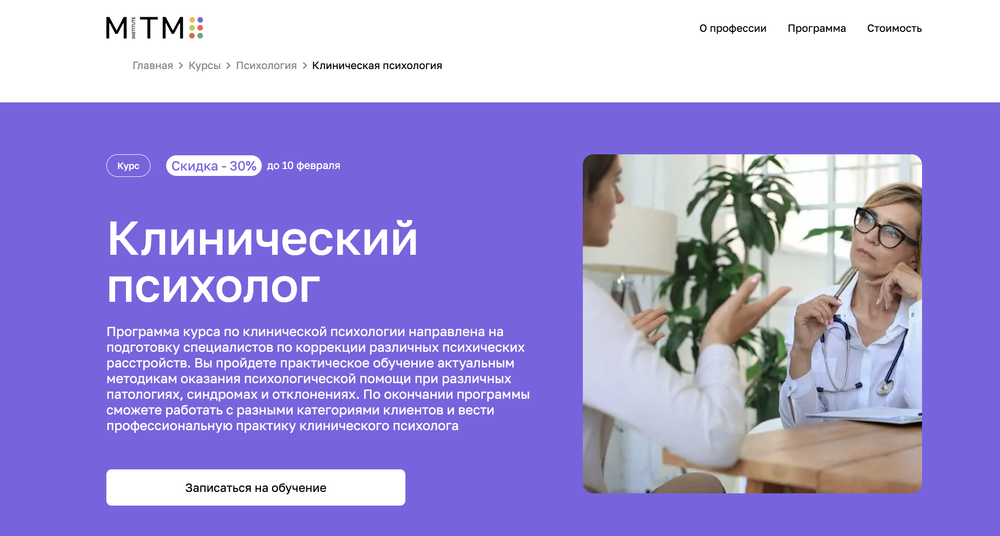- ✅ Официальный сайт: mitm.institute
- 💸 Цена: 129 000 руб
- 💳 Рассрочка: беспроцентная на 12 месяцев от 10 750 ₽/мес
- 📚 Формат: дистанционное обучение с видеолекциями, практическими заданиями и вебинарами
- ⏳ Продолжительность: 1 год
- 📜 Документ: диплом о профессиональной переподготовке государственного образца
- 📝 Трудоустройство: возможность работать клиническим психологом в медицинских учреждениях
- 🔷 Для кого подходит курс: психологи, медицинские работники, студенты и специалисты, желающие получить компетенции в сфере клинической психологии
Особенности курса:
Программа направлена на подготовку специалистов в области клинической психологии, акцентируя внимание на диагностике психического состояния, психиатрии, нейропсихологии и методах психотерапии. Студенты проходят обучение дистанционно, что позволяет освоить профессию психолога дистанционно без отрыва от работы. Курс содержит практические занятия и супервизии, которые помогают студентам освоить методы психологической диагностики.
Чему учатся студенты:
- Профессионально проводить диагностику психического состояния пациентов.
- Понимать основы психотерапии и методы психологической коррекции.
- Применять методы диагностики психических расстройств в клинической практике.
- Работать с различными психическими нарушениями.
Преимущества:
- Гибкий дистанционный формат обучения.
- Доступ к актуальным учебным материалам и поддержка преподавателей кафедры.
- Профессиональная переподготовка с выдачей диплома государственного образца.
- Возможность прохождения практики в медицинских учреждениях.
Отзывы учеников:
Студенты отмечают высокий уровень подготовки преподавателей, актуальность программ и удобство дистанционного обучения. Выпускники, получившие дипломы о профессиональной переподготовке, успешно работают в медицинских и психологических центрах.
7. Клиническая психология – МШПП
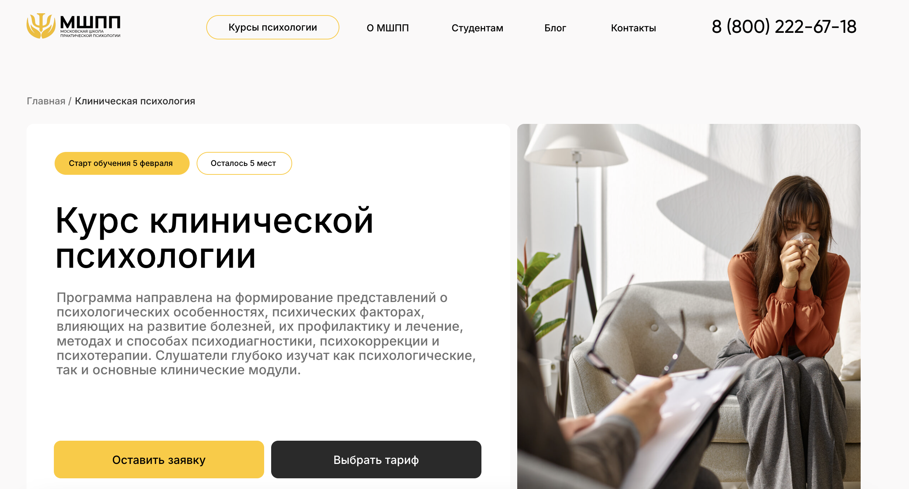- ✅ Официальный сайт: mspp.online
- 💸 Цена: от 130 000 ₽
- 💳 Рассрочка: от 3 до 36 месяцев от 3 650 ₽
- 📚 Формат: дистанционное обучение с видеоуроками, домашними заданиями и тестами.
- ⏳ Продолжительность: 72 недели.
- 📜 Документ: диплом о профессиональной переподготовке.
- 📝 Трудоустройство: карьерный центр, поддержка в поиске работы.
- 🔷 Для кого подходит курс: для студентов, практикующих психологов и желающих освоить профессию дистанционно.
Особенности курса:
Курс охватывает ключевые аспекты клинической психологии, включая диагностику психического состояния, методы психотерапии и психологическое консультирование. Дистанционное обучение позволяет пройти профессиональную переподготовку в удобное время. Программа разработана с учетом требований современного рынка, включающих практическую подготовку и клинические кейсы.
Кратко о программе:
- Общая психология
- Клиническая психология
- Патопсихология
- Нейропсихология
- Методы психологической диагностики
- Работа с кризисными состояниями
Чему учатся студенты:
- Проводить диагностику психического состояния.
- Применять методы психотерапии и психологической коррекции.
- Работать с различными психическими расстройствами.
- Оказывать психологическую помощь в кризисных ситуациях.
Преимущества:
- Обширная практика и работа в группах.
- Карьерный центр помогает выпускникам в трудоустройстве.
- Диплом о профессиональной переподготовке с международным признанием.
- Гибкий дистанционный формат обучения.
Отзывы учеников:
Выпускники отмечают удобство дистанционного обучения, насыщенную программу и поддержку преподавателей. Дипломы о профессиональной переподготовке позволяют работать в центрах психологической помощи и частной практике.
8. Клиническая психология с основами психотерапии – НИИДПО
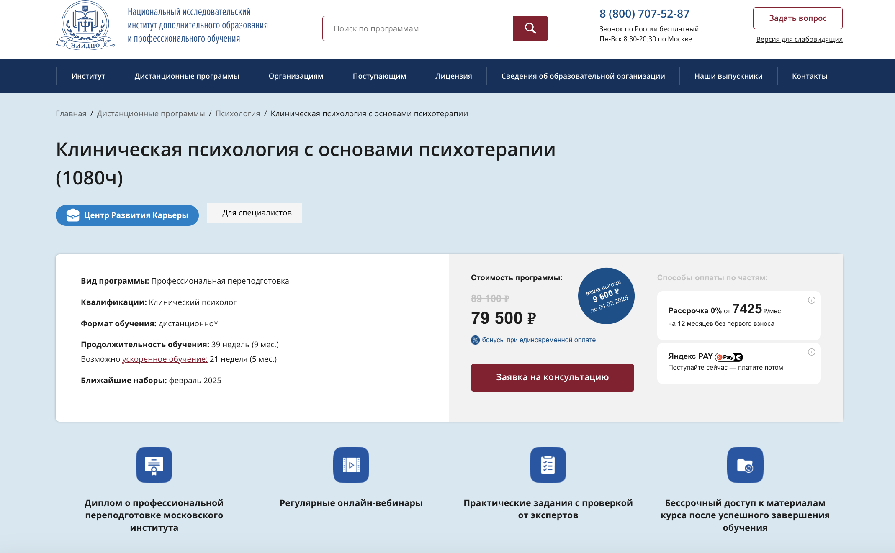- ✅ Официальный сайт: niidpo.ru
- 💸 Цена: 79 500 ₽ со скидкой
- 💳 Рассрочка: 0% от 7 425 ₽/мес на 12 месяцев без первого взноса.
- 📚 Формат: дистанционное обучение с видеоуроками, вебинарами и практическими заданиями с проверкой.
- ⏳ Продолжительность: 39 недель (возможность ускоренного обучения — 21 неделя).
- 📜 Документ: диплом о профессиональной переподготовке, признанный в России.
- 📝 Трудоустройство: поддержка Центра Развития Карьеры, консультации по построению психотерапевтической практики.
- 🔷 Для кого подходит курс: начинающим специалистам и психологам, желающим расширить квалификацию.
Особенности курса:
Программа направлена на профессиональную переподготовку специалистов в области клинической психологии с изучением основ психотерапии. Обучение включает диагностику психических расстройств, методы психологической коррекции, клиническую практику и взаимодействие с преподавателями кафедры психологии. Студенты проходят дистанционное обучение, что позволяет освоить профессию психолога дистанционно, совмещая учебу с работой.
Кратко о программе:
- Анатомия и физиология нервной системы.
- Основы нейропсихологии и патопсихологии.
- Диагностика психического состояния у взрослых и детей.
- Методы психотерапии: гештальт-терапия, КПТ, НЛП.
- Работа с пограничными состояниями и психосоматикой.
Чему учатся студенты:
- Применять методы психодиагностики и психотерапии в клинической практике.
- Проводить диагностику психических расстройств.
- Оказывать психологическую поддержку клиентам с эмоциональными расстройствами.
- Разрабатывать стратегии психологической коррекции.
Преимущества:
- Гибкий формат дистанционного обучения.
- Бессрочный доступ к учебным материалам после завершения курса.
- Практическое обучение с реальными кейсами.
- Поддержка карьерного консультанта для успешного трудоустройства.
Отзывы учеников:
Студенты отмечают насыщенную программу, профессионализм преподавателей и возможность изучать методы психотерапии в удобном формате. Выпускники, получившие диплом о профессиональной переподготовке, успешно работают в сфере клинической психологии.
9. Клиническая психология – ИПО
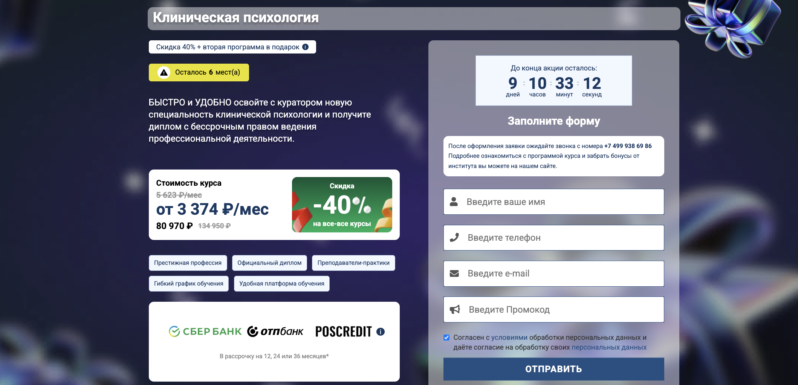- ✅ Официальный сайт: ipo.msk.ru
- 💸 Цена: 80 970 ₽
- 💳 Рассрочка: на 12, 24 или 36 месяцев от 5 623 ₽/мес.
- 📚 Формат: дистанционное обучение с видеозаписями, домашними заданиями и тестами.
- ⏳ Продолжительность: 10 месяцев (854 учебных часа).
- 📜 Документ: диплом о профессиональной переподготовке.
- 📝 Трудоустройство: предлагаются консультации и помощь в трудоустройстве через сеть партнеров.
- 🔷 Для кого подходит курс: для всех желающих получить новую профессию или повысить квалификацию в сфере клинической психологии.
Особенности курса:
Программа курса предоставляет возможность освоить профессиональную подготовку по клинической психологии. Обучение включает теоретическую базу, практические навыки, диагностику психических расстройств и работу с методами психотерапии. Дистанционный формат обучения позволяет проходить курс в удобное время, а диплом государственного образца открывает карьерные перспективы в медицинских учреждениях и частной практике.
Кратко о программе:
- Методы диагностики и лечения психических расстройств.
- Когнитивно-поведенческая терапия.
- Психопатология и психофармакология.
- Психологическая помощь в кризисных ситуациях.
Чему учатся студенты:
- Проводить психодиагностику и коррекцию.
- Разрабатывать стратегии психологического консультирования.
- Работать с пациентами с различными психическими расстройствами.
Преимущества:
- Гибкий график обучения, адаптированный под студентов.
- Поддержка преподавателей и персональный куратор.
- Доступ к библиотеке учебных материалов.
- Скидки и бонусы для студентов.
Отзывы учеников:
Студенты отмечают профессиональную подготовку, актуальные учебные программы и удобный дистанционный формат. Дипломы о профессиональной переподготовке помогают выпускникам успешно работать в области клинической психологии.
10. Клиническая психология с нуля — ИППСС
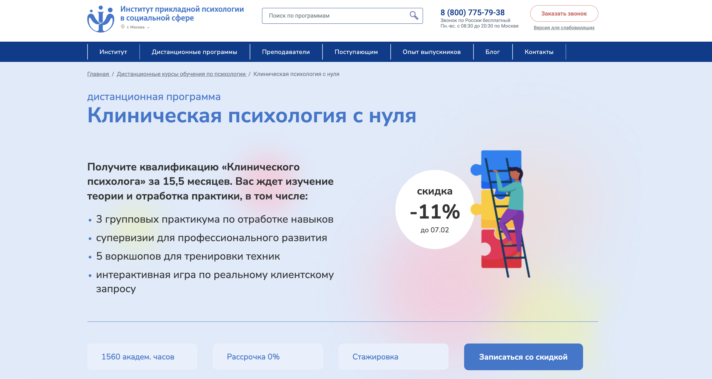- ✅ Официальный сайт: ippss.ru
- 💸 Цена: со скидкой 111 100 ₽
- 💳 Рассрочка: от 10 367 ₽/мес на 12 месяцев без процентов.
- 📚 Формат: видеоматериалы, практические задания, тесты и онлайн-консультации.
- ⏳ Продолжительность: 15,5 месяцев, 1560 академических часов.
- 📜 Документ: диплом о профессиональной переподготовке.
- 📝 Трудоустройство: карьерные консультации и стажировки у партнеров.
- 🔷 Для кого подходит курс: для всех, кто хочет стать клиническим психологом, а также для врачей и специалистов смежных профессий.
Особенности курса:
Программа профессиональной переподготовки рассчитана на студентов без опыта работы в клинической психологии. Курс охватывает диагностику психического состояния, методы психотерапии, психологическое консультирование и работу с эмоциональными расстройствами. Дистанционный формат обучения позволяет изучать теоретические основы и получать практические навыки. Студенты изучают методы психологической диагностики и психотерапии под руководством преподавателей кафедры психологии.
Кратко о программе:
- Основы психологии и психотерапии.
- Методы диагностики психического состояния.
- Психотерапия и консультирование.
- Психопатология и патопсихология.
- Работа с детьми и взрослыми.
- Психосоматика и клиническая психология.
Чему учатся студенты:
- Проводить диагностику психического состояния пациентов.
- Использовать методы психотерапии и психологической коррекции.
- Разрабатывать стратегии психологической реабилитации.
- Работать с клиентами с психическими расстройствами.
Преимущества:
- Гибкий формат дистанционного обучения.
- Поддержка преподавателей и кураторов на всех этапах обучения.
- Возможность практики и стажировок у партнеров.
- Выдача диплома о профессиональной переподготовке.
Отзывы учеников:
Студенты отмечают насыщенность курса, профессионализм преподавателей кафедры и актуальные методы психотерапии. Дистанционный формат позволяет совмещать учебу с работой, а диплом о профессиональной переподготовке открывает перспективы в сфере клинической психологии.
11. Клиническая психология – ЦАППКК
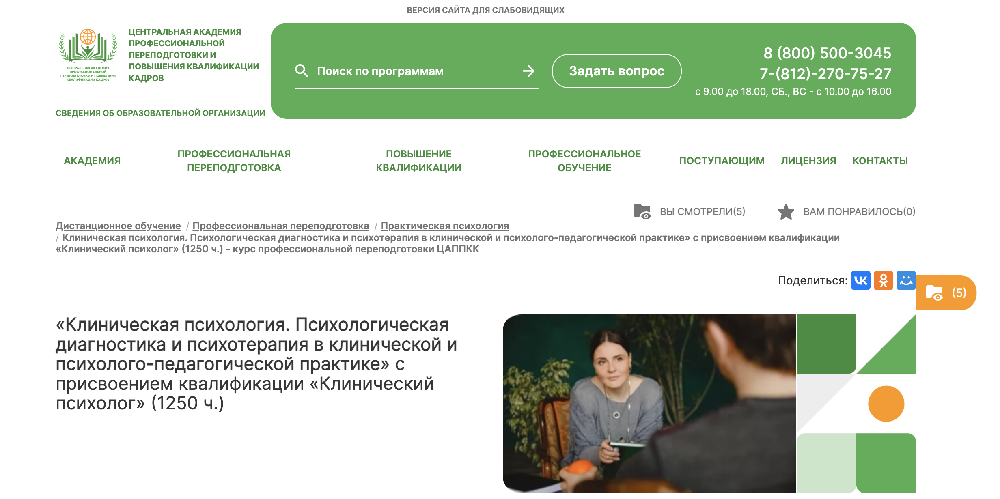- ✅ Официальный сайт: appkk.ru
- 💸 Цена: 55 000 р. со скидкой 19% (полная цена 68 000 р.)
- 💳 Рассрочка: возможность оплаты на 12 месяцев от 4 583 р./мес.
- 📚 Формат: заочное обучение с применением дистанционных технологий, включающее видеоуроки, тесты и контрольные задания.
- ⏳ Продолжительность: 8 месяцев (1250 часов).
- 📜 Документ: диплом о профессиональной переподготовке.
- 📝 Трудоустройство: помощь в составлении резюме и подборе вакансий.
- 🔷 Для кого подходит курс: для желающих стать клиническим психологом, а также практикующим специалистам, желающим улучшить свои знания в области клинической психологии.
Особенности курса:
Курс ориентирован на подготовку специалистов с высоким уровнем компетенции в области клинической психологии. Учебный план включает актуальные методики диагностики и коррекции психоэмоциональных состояний. Обучение проходит в комфортных условиях, позволяя совмещать учебу с основным видом деятельности. Программа включается авторские методики и современные подходы к психоанализу. Все материалы доступны 24/7, что обеспечивает гибкость в обучении.
Кратко о программе:
- Методы психологической диагностики
- Психотерапия и коррекция психоэмоциональных состояний
- Работа с детьми и взрослыми
- Общая психология и клиническая психология
- Кризисная психология
- Психологическая помощь в стрессовых ситуациях
Чему учатся студенты:
- Проводить психологическую диагностику и оценку состояния клиентов.
- Применять терапевтические методы в работе с различными категориями пациентов.
- Разрабатывать программы коррекции и профилактики психических расстройств.
- Работать в команде с другими специалистами в области психологии и медицины.
Преимущества:
- Доступ к актуальным учебным материалам и вебинарам.
- Поддержка опытных преподавателей и кураторов.
- Комфортный дистанционный формат обучения.
- Гибкий график обучения, позволяющий совмещать с работой.
Отзывы учеников:
Учащиеся отмечают профессионализм преподавателей, доступность материалов и возможность гибкого обучения. Многим нравится поддержка в трудоустройстве, а так же внимательность к потребностям студентов.
Кто такой клинический психолог
Клинический психолог — это специалист, который занимается диагностикой психического состояния, выявлением психологических проблем и оказанием профессиональной помощи. Работа включает консультирование клиентов, разработку индивидуальных программ психологической коррекции и применение методов психотерапии для лечения психических расстройств.
Что делают клинические психологи и чем занимаются
Клинические психологи применяют разнообразные терапевтические техники, чтобы помочь своим клиентам. Их работа включает:
- Диагностику психических расстройств;
- Проведение индивидуальных и групповых терапий;
- Разработка и внедрение реабилитационных программ;
- Консультирование по вопросам семейных и межличностных отношений;
- Обучение навыкам стресс-менеджмента и эмоциональной устойчивости.
Что должен знать и уметь клинический психолог
Для успешной работы клиническому психологу необходимо:
- Глубокое понимание методов диагностики психического состояния.
- Знание современных направлений психотерапии.
- Умение проводить психологическое консультирование.
- Использование методов психологической коррекции.
- Разработка стратегий психологической реабилитации.
- Этика работы с пациентами и конфиденциальность.
Востребованность и зарплаты клинических психологов в России в 2025 году
Клинические психологи востребованы в медицинских учреждениях, частной практике, корпоративных структурах и образовательных организациях. Средняя зарплата в России в 2025 году составляет от 70 000 до 120 000 рублей, в зависимости от опыта и уровня квалификации. Специалисты, прошедшие профессиональную переподготовку, могут зарабатывать значительно выше, особенно в сфере частного консультирования.
Как стать клиническим психологом и где учиться
Чтобы стать клиническим психологом, необходимо пройти несколько этапов:
- Получить высшее психологическое или медицинское образование.
- Пройти программы профессиональной переподготовки или курсы повышения квалификации.
- Изучить методы диагностики психических расстройств и методы психотерапии.
- Пройти практику или стажировку в медицинских учреждениях.
- Получить диплом государственного образца.
Популярные учебные заведения, предлагающие программы подготовки клинических психологов:
- Московский государственный университет им. М.В. Ломоносова.
- Санкт-Петербургский государственный университет.
- Российский государственный гуманитарный университет.
Перспективы и развитие карьеры клинического психолога
Клинический психолог может развиваться в различных направлениях:
- Работа в медицинских учреждениях и частных клиниках.
- Создание частной практики и консультирование клиентов.
- Преподавание на кафедрах психологии в университетах.
- Исследовательская деятельность в области психотерапии.
- Развитие корпоративной психологии и консультирование компаний.
Клинические психологи востребованы в сфере здравоохранения, образования и бизнеса. Дистанционное обучение позволяет освоить профессию психолога дистанционно и получить необходимые компетенции без отрыва от работы.
Дистанционное обучение по клинической психологии: новый взгляд на психологическое образование
Дистанционные программы переподготовки по клинической психологии становятся все более популярными. Они позволяют получить профессию психолога дистанционно, изучая актуальные методы диагностики и психотерапии. Дистанционное обучение доступно для студентов с высшим психологическим образованием, а также для специалистов, желающих освоить новую квалификацию.
Что такое дистанционное обучение?
Дистанционное обучение — это форма образования, при которой студенты получают знания через интернет. Программы дистанционного обучения включают:
- Лекции и семинары в формате видео и аудио.
- Онлайн-курсы с интерактивными заданиями.
- Работу с учебными материалами и тестами.
- Консультации с преподавателями кафедры психологии.
Таким образом, студенты могут изучать клиническую психологию в удобном формате, совмещая обучение с работой.
Преимущества дистанционного обучения по клинической психологии
- Гибкость. Возможность проходить обучение в удобное время.
- Доступ к актуальным материалам. Онлайн-библиотеки, видеокурсы и статьи доступны 24/7.
- Индивидуальный подход. Студенты проходят обучение по собственному графику.
- Возможность совмещения с работой. Обучение проводится дистанционно, что позволяет не прерывать профессиональную деятельность.
Как выбрать программу онлайн-обучения на клинического психолога?
Выбор дистанционной программы обучения — важный шаг. При выборе стоит учитывать:
- Репутацию учебного заведения. Ознакомьтесь с отзывами студентов и рейтингами программ.
- Аккредитацию курса. Важно, чтобы программа имела официальное признание.
- Содержание учебного плана. Ознакомьтесь с дисциплинами, которые включены в курс.
- Форматы обучения. Некоторые программы предполагают супервизии и практику.
- Поддержку студентов. Узнайте, насколько доступны преподаватели и менторы.
Будущее онлайн-обучения по клинической психологии
Дистанционные программы обучения открывают новые перспективы для профессионального роста. Они позволяют освоить методы диагностики психического состояния, получить навыки психотерапии и начать карьеру в области клинической психологии. Диплом о профессиональной переподготовке дает возможность работать в государственных медицинских учреждениях, центрах психологической помощи и частной практике.
------------------------------------------------
Реклама. Информация о рекламодателе по ссылкам в статье.